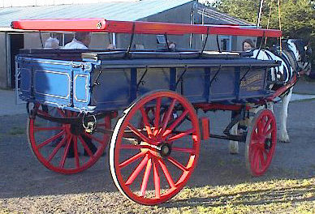
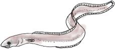

Né v'chîn dé tchi bein întérêssant qué j'liêsais l'aut' jour. Un professeur a caltchulé les vitesses dé difféthentes choses, d'la natuthe, d'un homme, du pas d'un j'va, d'un colimachon, et cétéra. Véthe, et i' publiyit ses r'chèrches ou dêcouvèrtes dans eune gâzette française y'a tchiques sémaines. Et sav'ous bein, j'trouvis ch'la, comme j'vouos dis, raide întérêssant. Mais comme la liste est hardi longue, jé n'prétends pon la r'produithe: j'ai seulement ieu l'idée dé prendre deux'trais d'ches dêcouvèrtes du professeur, pour la colonne d'la Chronique. Comment dgiâtre qu'il a peu dêtèrminner la vitesse dé cèrtaines choses tchi sont încliues dans san rapport, j'né sai rein - mais enfîn, n'împorte: à vous à d'vinner et à en jugi.
I' dit qu'un piêton fait ordinnaithement 120 vèrges à la minnute. S'i' marchait jour et niet i' f'sait l'tou du monde dans quatre chents chînquante jours - un an et trais mais. Véthe, mais jé compte qu'il éthait des dueuthillons sus les talons et des cors ès ortés quand i' veindrait à but, pardîngue!
Lé colimachon est ieune des criatuthes tch'ont l'mains d'vitesse: i' lî faut eune heuthe, allant l'galop, pour engamber un pid!

Un j'va allant l'pas fait dans les 3 vèrges par ségonde ou 6 milles à l'heuthe. J'mé sis souvent d'mandée en viyant un j'va dans les limons d'eune vaine ou d'un hèrnais, tch'est qu'en s'sais bein la vitesse. Ma fé, 6 milles à l'heuthe est à bein près juste, criy'ous pon?
Eune reinotte, j'liêsais, fait dans les 9 à 10 vèrges à la s'gonde, tchi veurt dithe 18 à 20 milles à l'heuthe. La dreine qué j'vis (ch'tait sus Crabbé, j'pense) n'allait dame pon si vite; oulle 'tait morte!
Assa, un lièvre à 55 vèrges à la s'gonde a eune ièrre dé tchiquechose comme 60 milles à l'heuthe. Dé-ouelle, ch'la n'm'êtonne pon tch'i' pèrde sa mémouaithe en couothant! S'i' pouvait continnuer sans arrêt l'tou du monde i' prendrait 16 jours à faithe la course.
La moûque dans eune ségonde travèrse 2 vèrges ou 4 milles à l'heuthe. L'héthonde vole à eune ièrre dé 65, l'aiglye à 80 et l'pigeon voyageur à 120 milles à l'heuthe. Lé pigeon, à chu compte, f'sait l'tou du monde en 8 jours, Mais j'ai lu étou ailleurs qué la vitesse d'eune héthonde à travèrs les airs était dans les 150 à l'heuthe. Tch'est qu'faut craithe, acheteu? L'ouaîsé tchi vole lé pus vite, dgia, (man grand-péthe disait qué ch'tait un êcrivain!) ch'est la néthe héthonde ou héthonde dé falaise. Il est dit qu'oulle a eune ièrre dé 220 milles à l'heuthe. Dé-ouelle, ouèqu'est la pouorre Pie?

Parmi les paîssons lé sheurque en emporte atou eune ièrre dé 35 milles à l'heuthe. Ch'est-là ch'qué j'appelle nagi, mé! A eune andgulle, i' faut deux heuthes et d'mie pour nagi un mille.
Un homme, sélon chu professeur, monte amont eune êtchelle à l'êtchipollent d'un tchièrs dé mille à l'heuthe. Les onglyes des daigts et d's ortés chaque heuthe craissent eune fraction d'un pouce. J'ai êprouvé à caltchuler combein d'heuthes ou d's'maines ou d'mais qu'i' faut pour les onglyes à craitre un bouon pouce mais j'n'ai pon peu en r'pather - j'ai laissi tout couôrre. N'y'a pas d'doute qué l'professeur li-même né put pon rêussi et ch'est ch'tchi fait, sans doute, qu'i' n'en dit mot!
La balle tchi sort du canon d'eune arme viage à 1,200 milles à l'heuthe. Quâsiment incriyablye, tout d'même, est-che pas? Mais comment dgiâtre qué nou peut dêcouvri d'ité, acheteu, dites-mé? Et pensez qu'eune balle dé canon file acouo eune fais aussi vite - du mains, v'là chein qué not' moussieu nouos apprend.
Quand nou vait eune êtaile tchi file à travèrs les cieux, i' nouos est dit qué ch'la r'présente à bein près 10,000 milles à l'heuthe. Pas grand' chose, ma fé, quand nou l'dit vite étou!
Eh bein, tout chenna est cèrtainement întérêssant sans doute, jé n'vouos ai donné qué tchiques exemplyes hallés, comme nou dit, au hasard dé la plieume. Mais, s'lon mé, y'a un tas d'choses qué l'professeur a mantchi et n'en v'chîn eune ou deux: la vitesse d'un jet d'la patate jèrriaise pousse un co qu'oulle est en tèrre, la ièrre du canné des Moulîns dans la Vallée d'St. Pièrre en hivé, combein vite qué les sniles et l's'nichon craissent en pliein êté dans les gardîns, la vitesse d'eune vèrrée d'biéthe avau l'gôsyi d'un altéthé, la ièrre qué m'n anmîn Mess Simon va au matîn quand il est en retard à l'office d'la Chronique et - pas d'autres, ch'est 'chîn la dreine - tchique idée d'la hâte et d'la prêsse tchiques fais.
À la préchaine.
FLM
1937
Viyiz étout: